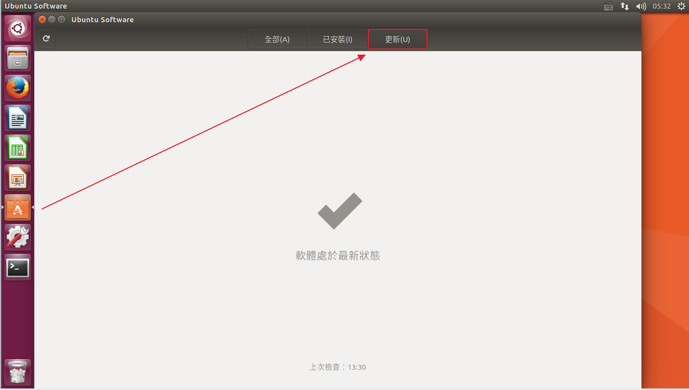
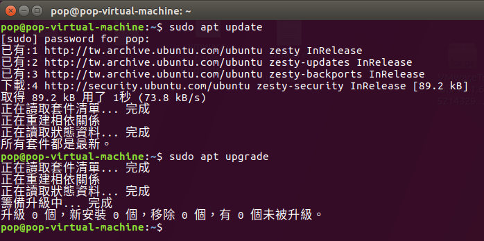
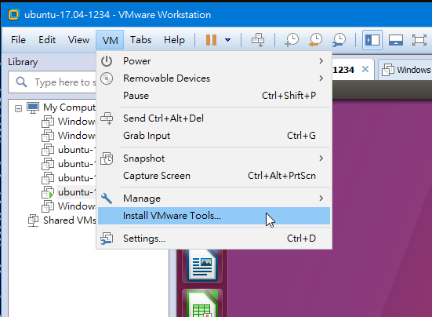
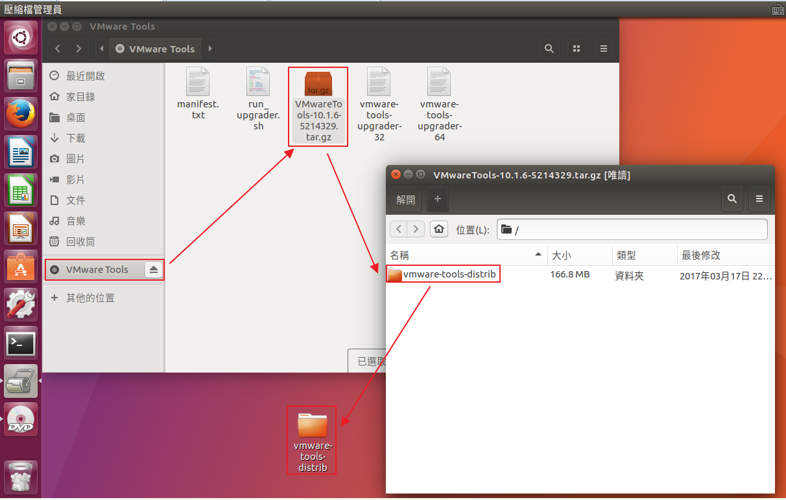
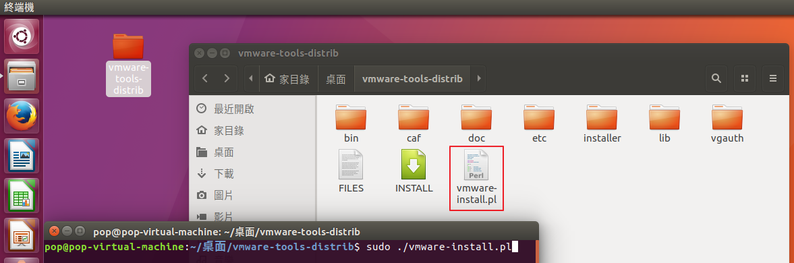
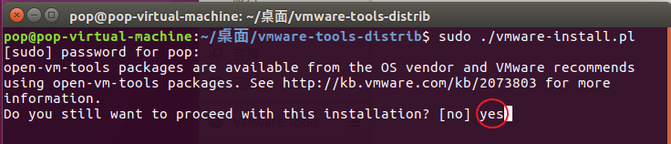
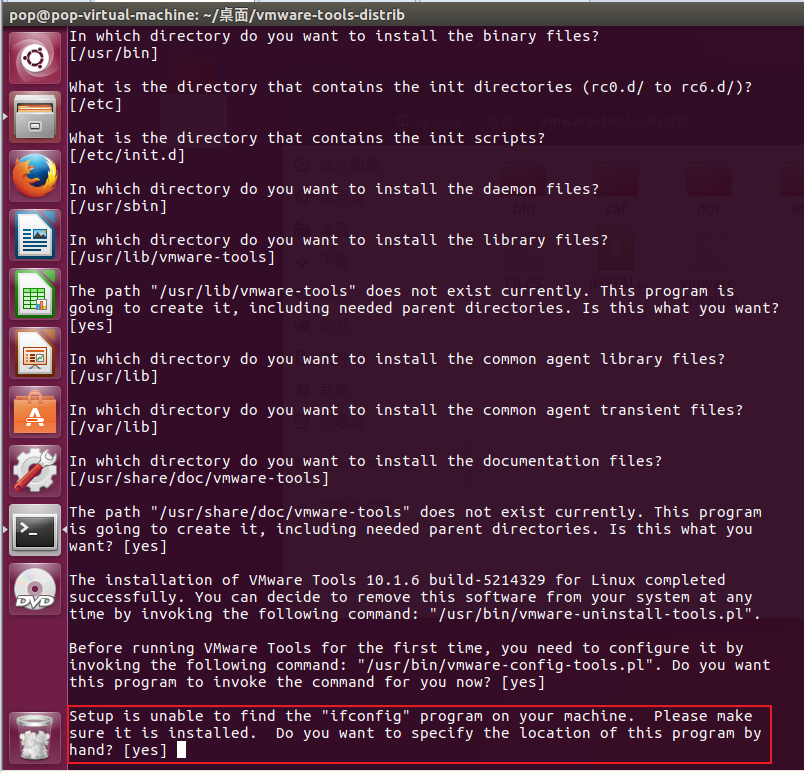

於VMWare下的Ubuntu 17.04作業系統安裝VMWare Tools之流程
一、在更新之前先解決網路問題
當要借由 network-manager 使用PPPoE的方式連上網路時，
雖然可連上網但做系統更新時跑超久沒看到網路有傳輸的跡像，
還有一些特定的網站連的超級慢甚至不能連，例如：yahoo
上網查了很多相關資料，大部份都把問題指向了「DNS的指定」、「MTU大小的調整」，
經過網友的說明，我也堅信著解決兩個問題之後就可以正常連線了，
結果還是不行，這時只能暫時認為是 network-manager 是有問題的(ubuntu 16.04版也是有這問題)，
我決定改用 pppoeconf 來連上網路，結果馬上解決問題。
二、在替ubuntu系統安裝VMWare Tools之前，我習慣先把系統更新到最新，以免有非預期事件發生。
做ubuntu software -> 更新

再做sudo apt updaate、sudo apt upgrade

三、安裝VMWare Tools

將安裝光碟內VMwareTools-10.1.6-5214329.tar.gz裡面的vmware-tools-distrib資料夾解壓縮到桌面(我個人習慣是放到桌面)

使用終端機於vmware-tools-distrib資料夾內執行「sudo ./vmware-install.pl」

這時訊息會跳出有open-vm-tools packages可用，但我還是先用VMWare Tools就好了，值請改成「yes」。

剩下的步驟應就只要一直按Enter下一步就好，但你有可能在安裝的過程中會遇到如下問題
「Setup is unable to find the "ifconfig" program on your machine. Please make
sure it is installed. Do you want to specify the location of this program by
hand?」

由於系統還沒安裝 net-tools 套件，所以不能使用 ifconfig 指令，所以就是要安裝 net-tools ，
先執行「Ctrl + Z」中終止安裝VMWware Tools，再執行「sudo apt install net-tools」指令，
接下來再次安裝VMWare tools就沒問題了，安裝完桌面上的安裝檔已不需要，可以刪了。
參考資料：